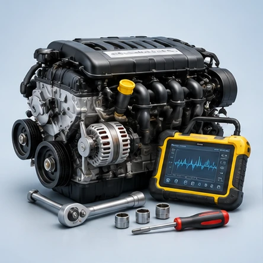
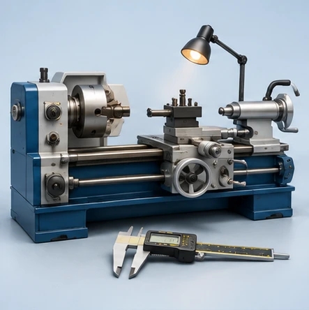
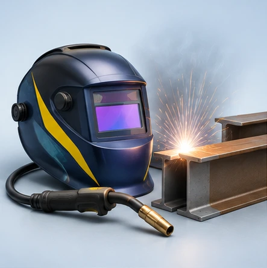
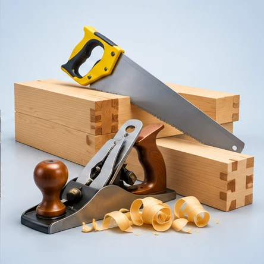
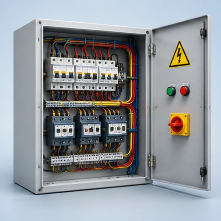
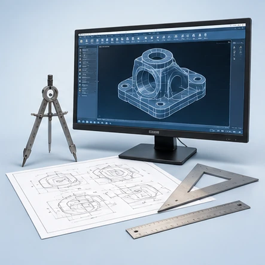

Automotive
Engine systems, diagnostics and vehicle maintenance in a dedicated automotive workshop.
Six specialist workshops, Engineering Graphics and Design classrooms, and a CAD laboratory.
The school describes six workshop disciplines and Engineering Graphics & Design. Animations are illustrations of learning concepts, not photographs of school equipment.
Equipment illustrations are AI-generated visual examples, not photographs of the school’s actual workshops.

Engine systems, diagnostics and vehicle maintenance in a dedicated automotive workshop.

Precision measuring, turning and milling on lathes and machine tools, working to specified tolerances.

Sheet metal, fabrication and welding techniques, developing practical joining skills.

Joinery, furniture-making and timber technology, from hand tools to machinery.
Building science, bricklaying and site practice, grounded in civil trades.

Electrical principles, circuits and control systems used in modern machinery.

Technical drawing and CAD, the shared drawing language behind technical disciplines.
Source: Official school website ↗. Confirm specific subject combinations, practical assessment and workshop access with the school.
The school advertises four engineering graphics classrooms and a CAD lab, connecting drawing and design with practical learning.
View academic pathways ↗
The WCED named Oude Molen’s Maghdi Achilles the teacher winner in Woodworking at the 2026 Provincial Skills Competition.
Read source ↗WCED results list Oude Molen third in the automotive category of its 2022 provincial technical skills competition.
Read source ↗UCT reported that Oude Molen and Oaklands learners participated in an engineering outreach project and designed experimental wind turbine models.
Read source ↗